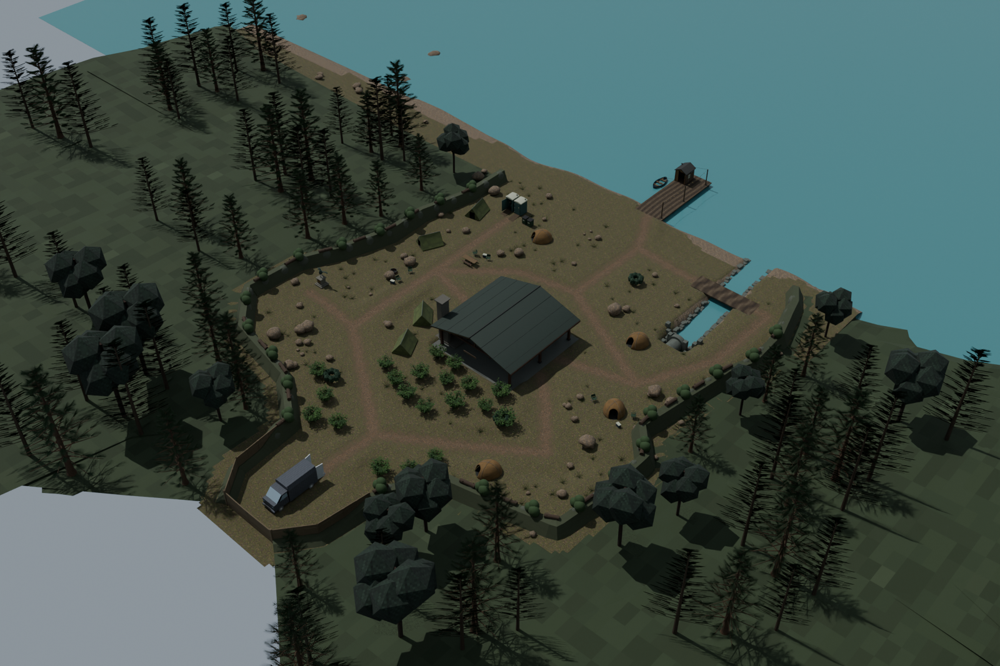
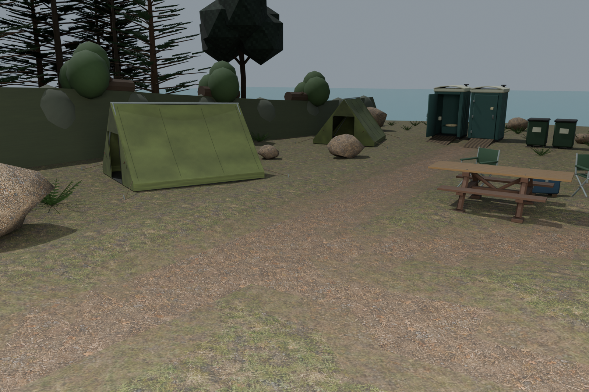
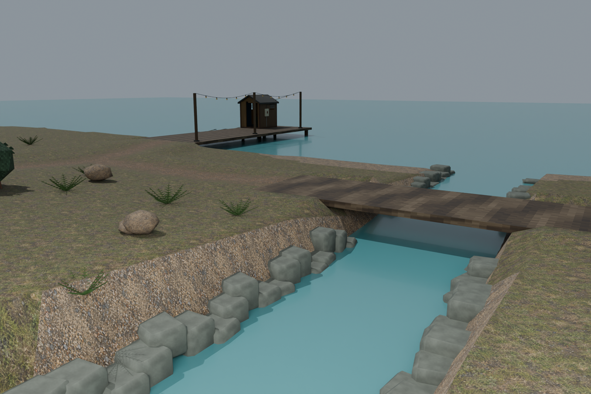
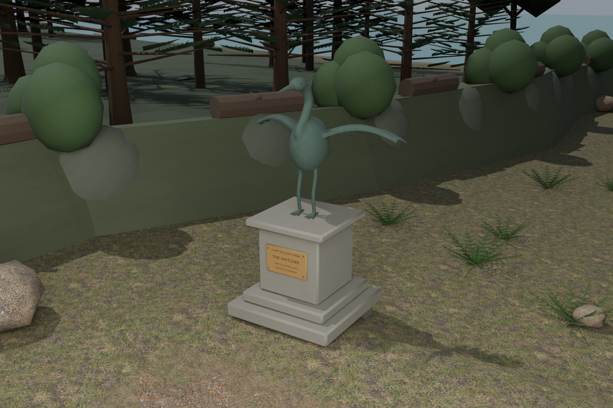
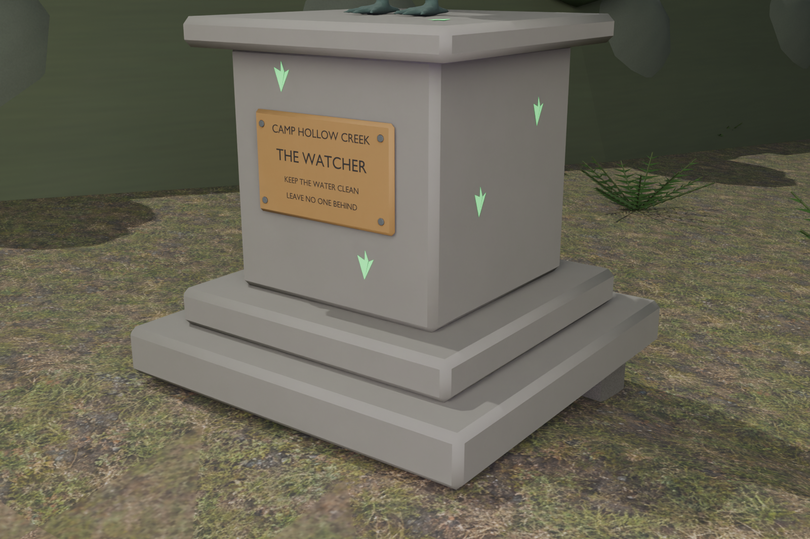

Latest: rounded earthen banks and solid fractured bedrock
24 October 2026 · Native scene/model review
These are saved native art captures, not running-game screenshots. The map remains locked pending its actual terrain, collision, circuitry, UV encounter and host/LAN integration.





105 supported stones/boulders, 4410 actual rock vertex probes, facility clearance, 127646 world-scale UV loops and 14768 bare-shore faces pass. The casting is one closed connected12002-vertex surface; both feet sit on the plinth. Six site-art exports and eight reoriented/refitted tent exports retain exact oriented source triangles within unchanged 50k-triangle/4MB limits.
Eight varied tent headings include corresponding bedding relocation and renewed terrain clipping; the original dense floor subdivision is not restored. Independent floor, roof, gear, entry, route, ritual, ramp, culvert and native-barrier checks are retained in linked reports.
Quiet3.195-second pitch-lowered, stretched and wobbling treatment. Source: el_boss — Goose Trumpet (CC0). Original public HQ preview, filter, hashes and measurements are retained. This asset is not yet connected to an active UV/range/occlusion/host/LAN trigger.
Continue the environmental material audit through boundary banks, bark, foliage, timber, metal and stone patina. Current tile transitions still follow terrain faces and need a smoother authored blend review. Keep the UV lore cosmetic and distinct from ghost identification evidence. Actual runtime movement/optics/performance, water transparency/layering, electrical behavior, physics, final lore and encounter acceptance remain open.
Refitted tent placements/exports
Routes/entry/ritual/native barrier validation